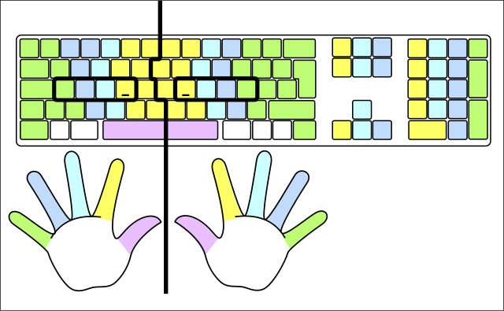
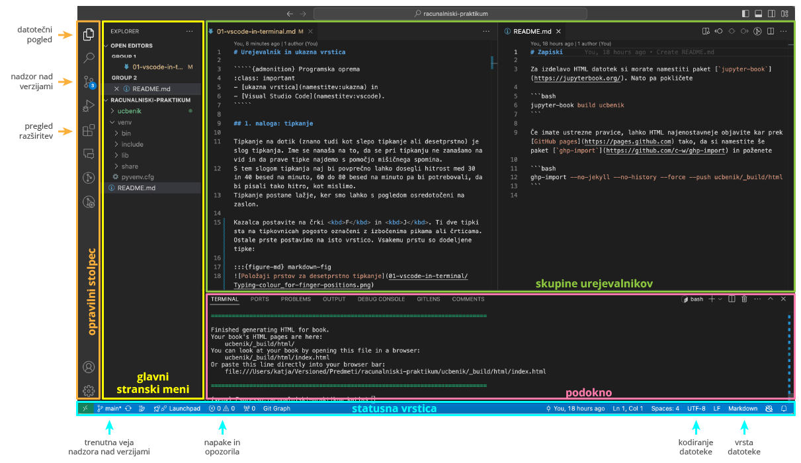

Urejevalnik in Markdown#
Programska oprema
Branje navodil
Priporočamo, da si vsako navodilo najprej natančno preberete do konca.
Tipkanje#
Med študijem boste pisali matematična besedila, programirali in se pogovarjali z umetno inteligenco, zato boste veliko tipkali. Tipkanje na dotik (znano tudi kot slepo ali desetprstno tipkanje) je slog tipkanja, pri katerem se ne zanašamo na vid, ampak prave tipke najdemo s pomočjo mišičnega spomina. S tem slogom tipkanja naj bi povprečno lahko dosegli hitrost med 30 in 40 besed na minuto, 60 do 80 besed na minuto pa bi potrebovali, da bi pisali tako hitro, kot mislimo. Tipkanje postane lažje, ker smo lahko s pogledom osredotočeni na zaslon.
Kazalca postavite na črki F in J. Ti dve tipki sta na tipkovnicah pogosto označeni z izbočenima pikama ali črticama. Ostale prste postavimo na isto vrstico. Vsakemu prstu so dodeljene tipke:

Fig. 1 Položaji prstov za desetprstno tipkanje
Cy21,
CC BY-SA 3.0,
via (Wikimedia Commons)
#

Hitri programerji ne uporabljajo miške, ker jih le-ta upočasni. Pomembno je, da se naučite uporabljati bližnjice v vseh programih, ki jih uporabljate pogosto. Veliko bližnjic se da uporabiti z eno roko. Desničarji lahko na primer z levo roko uporabijo bližnjico Alt+Tab (Cmd+Tab na MacOS) za preklapljanje med okni, medtem ko imajo desno roko na miški.
Urejevalnik VSCode#
Programe in matematična besedila boste pisali kot navadno besedilo, zato je pomembno, da se naučite kompetentno uporabljati profesionalni urejevalnik. Priporočamo Visual Studio Code (na kratko “VSCode”), odprtokodni urejevalnik z dobro podporo za programiranje in pisanje besedil v LaTeX-u. Navodila za vaje bodo predpostavljala, da uporabljate VSCode. Seveda pa lahko uporabljate kak drug urejevalnik, pod pogojem, da ga res dobro poznate!
Urejevalniki, kot je VSCode, so namenjeni predvsem razvijalcem programske opreme in omogočajo urejanje izvorne kode programov. V primerjavi s programi, kot je Microsoft Word, v VSCode ne določate, kako naj bo naslov videti, ampak označite, kateri del besedila je naslov. Kmalu boste opazili, da urejevalnik sam od sebe spreminja izgled določenih delov besedila. Temu rečemo poudarjanje sintakse (angl. syntax highlighting). Pomaga nam, da hitreje razberemo pomen izvorne kode (ali pa najdemo napake v njej). Barve, ki jih pri tem vidite, niso shranjene v datoteki: urejevalnik jih sproti določi sam, zato se spremenijo, ko zamenjate temo.
Glavni deli uporabniškega vmesnika VSCode so:
opravilni stolpec (angl. Activity Bar), v katerem preklapljate med različnimi pogledi stranskega menija, kot so datoteke (angl. Explorer), upravljanje različic (angl. Source Control) in razširitve (angl. Extensions),
glavni stranski meni (angl. Primary Side Bar), ki prikazuje izbrani pogled,
skupine urejevalnikov (angl. Editor Groups), v katerih urejate odprte datoteke,
podokno (angl. Panel), ki vsebuje npr. ukazno vrstico in sporočila o napakah,
statusna vrstica (angl. Status Bar) z uporabnimi informacijami, ki jih bomo spoznali kasneje.

Fig. 2 Uporabniški vmesnik urejevalnika VSCode#
Več informacij:
dokumentacija za VSCode, kjer začnite z razdelkom “Get started”,
1. naloga: tipkanje#
Preizkusite se na spletni strani TypingTest.com (Izberite “1 minute” in “Medium”).
Zapomnite si svoj rezultat (WPM – words per minute), saj ga boste vpisali v anketo, ki jo boste reševali za domačo nalogo. Rezultati bodo objavljeni anonimno, vi pa boste videli, kam se uvrščate.
Nasvet za operacijski sistem MacOS
Za tipkanje redkejših znakov si pomagajte s programom Keyboard Viewer, ki je že nameščen na vašem sistemu.
Vaja za doma
Odločite se za postavitev tipkovnice (slovensko, angleško, Dvořak, …) in približno 15 minut vadite tipkanje. Izberite vaje tako, da bo tipkovnica v lekcijah čim bolj podobna izbrani.
Na strani Touch Typing Study so lekcije nekoliko manj barvite, imate pa veliko izbiro postavitev tipkovnic, vključno s slovensko.
Če uporabljate angleško tipkovnico, lahko začnete s prvo lekcijo na TypingTest.com ali z lekcijami na Typing.com.
Na spletnih straneh Typing Tutor, Type Fu in Typing Club najdete vaje za manjši izbor postavitev tipkovnic v več jezikih.
Vaje tipkanja, ki so neodvisne od postavitve tipkovnice, najdete na Keybr.com. Na tej spletni strani vam ne pomagajo s sliko tipkovnice.
Petnajst minut vaje je seveda premalo, da bi se naučili desetprstnega tipkanja. Če se želite naučiti, bo najlažje, če si vzamete vsak dan četrt ure za vedno težje vaje. Po kakih 10 urah vaje bi vaši prsti že morali biti dovolj seznanjeni s tipkami, da boste lahko počasi tipkali desetprstno. Ob rednih vajah boste tekoče tipkali do konca semestra.
2. naloga: spoznajte VSCode#
Poženite VSCode.
Preletite razdelek o uporabniškem vmesniku. Bodite pozorni na osnovno razporeditev in na svojem računalniku poiščite glavne dele vmesnika, opisane v razdelku Urejevalnik VSCode.
V dokumentaciji poiščite, kako spremenite temo (izgled, angl. Color Theme) urejevalnika in jo spremenite na tako, ki vam je všeč.
Zaprite urejevalnik.
3. naloga: pripravite datoteko README#
Del domače naloge
Datoteko, ki jo boste pripravili, boste potrebovali za domačo nalogo.
Datoteko boste pripravili, shranili in ponovno odprli brez miške, pri urejanju vsebine pa lahko uporabljate tudi miško. Dela brez miške rešujte skupaj z asistentko/om ali demonstratorko/jem, ki pa vam ne sme pomagati pri iskanju bližnjic (lahko si pomagate med sabo). Najprej preberite spodnja pravila in se pripravite na izvajanje naloge. Vnaprej poiščite potrebno dokumentacijo (na primer, kako v VSCode z bližnjico odprete imenik?), da ne boste brskali kasneje. Pri tem vam bo v pomoč plonkec za uporabo tipkovnice, predvsem razdelka Zaganjanje programov in Splošne bližnjice.
Pozor, uvajamo standarden zapis
Včasih boste v navodilih opazili besedilo v čudnih oklepajih ⟨besedilo-v-cudnih-oklepajih⟩ (ki bo pogosto napisano brez šumnikov, presledki pa bodo nadomeščeni z vezaji). Te oklepaje uporabljamo zato, da poudarimo, da gre za del besedila, ki ga nadomesti vsak zase. Besedilo v oklepajih vam pove, s čim je treba vse skupaj (z oklepaji vred) nadomestiti.
Prvi primer boste srečali spodaj, C:\Users\⟨uporabnisko-ime⟩. Če je vaše uporabniško ime Gandalf, potem je prej omenjena pot v vašem primeru C:\Users\Gandalf (in ne C:\Users\⟨Gandalf⟩).
Ta (ali podoben) način označevanja je kar običajen za mesta, kjer morate vnesti svoje podatke (drugi avtorji včasih uporabijo tudi drugačne oklepaje).
Pozor, uvajamo standarden zapis
Z znakom 🍎 označujemo, kar velja za MacOS.
3.1 Pripravite se za delo (brez miške)#
S tipkovnico in čim manjšo uporabo miške naredite naslednja opravila:
Odprite svoj domači imenik v upravitelju datotek:
na Windows v Raziskovalcu (angl. File Explorer):
C:\Users\⟨uporabnisko-ime⟩,na MacOS v Finderju:
/Users/⟨uporabnisko-ime⟩,na Linuxu:
/home/⟨uporabnisko-ime⟩.
V njem ustvarite imenik za Računalniški praktikum (npr.
C:\Users\⟨uporabnisko-ime⟩\rp), v njem pa imenikracunalniski-praktikum. Zunanji imenik je vaš: poimenujete ga lahko po svoje in vanj boste dali vse, kar je povezano s predmetom. Za notranjega priporočamo imeracunalniski-praktikum: tako ga bodo imenovala navodila v nadaljevanju semestra.Poženite urejevalnik VSCode.
V urejevalniku odprite imenik
racunalniski-praktikum(npr.C:\Users\⟨uporabnisko-ime⟩\rp\racunalniski-praktikumoz. 🍎/Users/⟨uporabnisko-ime⟩/rp/racunalniski-praktikum).Ustvarite novo datoteko in jo takoj shranite v ta imenik. Odprlo se bo pogovorno okno z aktivnim vnosnim poljem, v katerega že takoj lahko začnete pisati ime datoteke; poimenujte jo
README.md. S pritiskom na vnašalko ↵ potrdite ime.Poiščite, kje v statusni vrstici piše, kakšne vrste datoteko urejate. Vrsto je urejevalnik ugotovil iz končnice
.md.V upravitelju datotek preverite, ali se vsebina imenika za Računalniški praktikum ujema s spodnjo sliko.
Fig. 3 Strukturo imenikov bomo prikazovali kot zgoraj.#
3.2 Uredite dokument#
Pri urejanju lahko uporabljate tudi miško.
Odprite predogled. Zavihek s predogledom z miško povlecite proti desnemu zgornjemu kotu okna urejevalnika, da preklopite v pogled, v katerem boste videli datoteko in predogled hkrati (če vam ni všeč, zavihek prestavite nazaj).
Kopirajte in prilepite spodnje besedilo v datoteko
README.md.Kopirajte: z miško se zapeljite zgoraj desno v okvirček in kliknite na ikono, ali pa označite besedilo in pritisnite Ctrl+C oz. 🍎 Cmd+C.
Prilepite: Ctrl+V oz. 🍎 Cmd+V.
Oglejte si predogled.
<!-- glavni naslov -->
Računalniški praktikum
<!-- To je komentar, ki bo na prikazanem Markdownu skrit.
V tem besedilu so v komentarjih napisana navodila za reševanje. Pustite jih v datoteki. -->
<!-- 2. nivojski razdelek -->
Bližnjice na tipkovnici
Kopiraj označeno v odložišče: Ctrl+C (**C**opy)
Izreži označeno v odložišče: Ctrl+X
Prilepi vsebino odložišča: Ctrl+V
<!-- 2. nivojski razdelek -->
Koda
Včasih pride prav značka kbd za tipke. Značko uporabimo takole:
<!-- začetek bloka kode -->
<kbd>Ctrl</kbd>
<!-- konec bloka kode -->
<!-- 2. nivojski razdelek -->
Domača naloga
<!-- Spodnji seznam bo pripravil seznam nalog. Na GitHubu bodo lepo vidna potrditvena polja,
VSCode pa bo prikazal samo oglate oklepaje. Ko nalogo opravite, si to lahko zabeležite tako,
da spremenite [ ] v [x]. -->
- [ ] Izberite si še tri bližnjice, ki jih še ne uporabljate redno, in se jih naučite.
Dodajte jih v prvi razdelek tega dokumenta.
<!-- 2. nivojski razdelek -->
Uporabne povezave
FMF učilnica <!-- https://ucilnica.fmf.uni-lj.si/ -->
Računalniški sistemi, storitve in oprema za študente <!-- https://ucilnica.fmf.uni-lj.si/mod/page/view.php?id=51619 -->
Zapiski in vaje za Računalniški praktikum <!-- https://racunalniski-praktikum.github.io/ -->
Dokumentacija za Markdown na GitHubu <!-- https://docs.github.com/en/get-started/writing-on-github/getting-started-with-writing-and-formatting-on-github/basic-writing-and-formatting-syntax -->
Pomagajte si z dokumentacijo za Markdown na GitHubu in sledite spodnjim navodilom.
Označite glavni naslov in razdelke. V navadnem besedilu jih lahko prepoznate po tem, da je v vrstici nad njimi komentar (besedilo med znaki
<!--in-->, ki se ne izpiše).V razdelku “Bližnjice na tipkovnici” uredite vrstice tako, da se bodo izpisale kot neoštevilčen seznam. Pomagajte si z večimi kurzorji (angl. multi-cursor).
V seznamu besede “Kopiraj”, “Izreži” in “Prilepi” označite kot ležeče (angl. italic). Tudi tu si lahko pomagate z večimi kurzorji: s Ctrl+←→ (🍎 Option+←→) se lahko premikate med besedami.
V prvem odstavku razdelka “Koda” označite
kbdkot kodo v besedilu (angl. inline code).Označite blok kode (angl. code block). Komentarja povesta, kje se blok začne in kje konča.
V razdelku “Uporabne povezave” vrstice označite kot oštevilčen seznam.
V seznamu označite povezave. V vsaki vrstici je po ena povezava: besedilo naj bo besedilo povezave (tisto, kar kliknemo), naslov v komentarju pa naj bo tarča povezave (tja, kamor nas povezava pelje).
3.3 Zaključite delo (brez miške)#
S tipkovnico in čim manjšo uporabo miške naredite naslednja opravila:
Shranite datoteko
README.md.Zaprite datoteko
README.md.Ponovno odprite datoteko
README.md.
Če delate na šolskem računalniku
Poskrbite, da boste do datoteke lahko dostopali tudi doma, saj jo boste potrebovali pri domači nalogi. Uporabite na primer Dropbox, Google Drive ali OneDrive — do vseh lahko dostopate tudi v brskalniku — ali pa si datoteko pošljite po elektronski pošti.